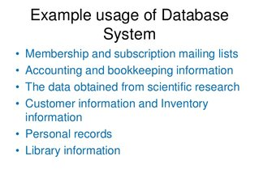
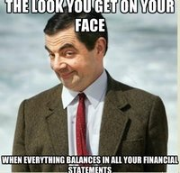
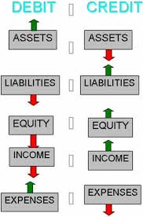

Hi! My name is Sasha.
I am here to provide you with a simple and effective bookkeeping and/or record keeping solution.
All the financial transactions are kept in a database text file. The open format allows an easy overview of all records,
easy on-demand extraction of reports, as well as instant access to statements which summarize the financial position of
your business at any point in time.
Need Full-Charge Bookkeeping done? Can do! (A full-charge bookkeeper handles all of the accounting needs of a small business with
minimum supervision, including the preparation of financial statements.)

What is Bookkeeping?
It is the process of Systematic Classifying, Recording and Organizing of all Financial Transactions of a Business or a Person.
Daily transactions are recorded in Journal(s).
Monthly totals are then Posted to the Ledger. The ledger is basically a Chart of
Accounts.
An account is a unique record for each type of asset, liability, equity, revenue and expense.
Based on the information
in the ledger, Financial Statements are produced on a periodic basis. Most commonly used statements are Profit and Loss, Balance Sheet, and
Cash Flow.
Why keep your financial records in an organized and up-to-date state?
For Bookkeeping Records to be useful, they need to be updated on a regular basis, so they reflect current and accurate information.
Good record keeping is a legal requirement.
Reliable information is of utmost importance for good business decision making.
Up-to-date records save time and accounting fees, when it comes to taxes.

My Professional Background
I am a Bachelor of Science graduate from University of Toronto, with Majors in Applied Mathematics and Computer Science.
My post-graduate training and education also includes Bookkeeping and Accounting.
I've been trained by an accounting firm
to perform the full Bookkeeping Cycle, up to and including, preparation and analysis of financial statements.
Recently I've earned Diplomas with Highest Honours in Bookkeeping and Accounting from Stratford Career Institute.
I have operated a successful yoga studio business for over 25 years, filling all roles required, including daily bookkeeping,
year-end accounting and tax preparation.

I am available!
Currently, I have room to serve a few more clients. Service industry only please.
About Pricing. No business is same.
After the initial FREE consultation, I will be able to give you a fair estimate for my services. During the consultation, I will find out
about the size of your business, number of any employees, number of transactions per month, and the condition of your current records.
Based on that information, you will receive a quote for my setup fee, any catch up fee, and the regular monthly flat fee for my bookkeeping
services.
I am dedicated and steadfast in my work.
Please don't hesitate to contact me!
Alexander (Sasha) Shkolnikov, B.Sc.
openledgers@gmail.com